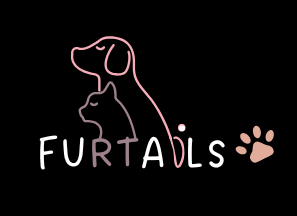

SkinWhisper is a skincare website that offers personalized routines
and product recommendations. Built with React.js,
Node.js, Express.js,MongoDB,
JWT, and Stripe

FurTails
is a pet care planner built with HTML,
CSS, SQL, and JavaScript,
allowing users to manage pet profiles, track health records,
schedule feeding and vet visits with reminders, and get personalized
recipe suggestions.